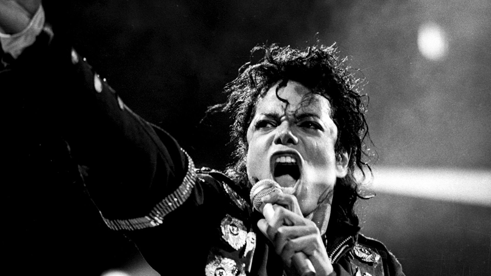

Foi um cantor, compositor e dançarino estadunidense. Apelidado de "Rei do Pop", foi um dos ícones culturais mais importantes e influentes de todos os tempos e um dos maiores artistas da história da música. Suas contribuições para a música, a dança e a moda por mais de quatro décadas, juntamente com a divulgação de sua vida pessoal, fizeram dele uma figura global na cultura popular.
Biografia
1958 - 1975: Infância e The Jackson
Michael era o sétimo de nove filhos de Joseph e Katherine Jackson. A família inteira – incluindo os irmãos mais velhos, Rebbie, Jackie, Tito, Jermaine, LaToya e Marlon, e os mais novos, Randy e Janet. Na Motown, Michael e seus irmãos gravaram vários álbuns, o que lhes rendeu fama mundial. Com apenas treze anos, Michael, através dos Jackson 5, havia colocado quatro canções no topo das paradas: "I Want You Back", "ABC", "I'll Be There", "The Love You Save".
1982–1983: Thriller e Motown 25
Jackson resolveu trabalhar nos dois projetos simultaneamente, o que gerou desconforto na Sony Music. O disco narrado por Michael seria distribuído pela MCA Records no mesmo mês em que a gravadora tinha agendado o lançamento de Thriller.
O álbum foi finalizado em seis meses e lançado em novembro de 1982, depois de vários adiamentos.
Thriller é atualmente o álbum mais vendido da história, com mais de 110 milhões de cópias vendidas no mundo.
1986–1990: Mudança na aparência
As alterações na aparência de Michael eram visíveis e geravam muita polêmica. Os jornais especulavam sobre dezenas de cirurgias plásticas, apesar do músico confirmar apenas duas, e possíveis razões para a mudança na cor da pele dele, que estava branca. Especialistas acreditavam que Michael teria se submetido a um tratamento intensivo com hidroquinona, uma substância capaz de clarear a pele. Em 1993, durante entrevista à apresentadora Oprah Winfrey, Jackson afirmou sofrer de vitiligo, uma doença autoimune não contagiosa em que ocorre a perda da pigmentação.
1991–1993: Dangerous
Depois de um ano longe das paradas de sucesso, Michael pôde ser ouvido novamente nas rádios em novembro de 1991 com a canção "Black or White", o primeiro compacto lançado do álbum Dangerous. Jackson convidou o diretor John Landis (de "Thriller") para gravar o videoclipe da canção.
. O álbum ficou mais de dois anos entre os mais vendidos e foi adquirido por 34 milhões de pessoas no mundo, superando Bad como o segundo melhor desempenho da carreira do cantor.
✞ Morte ✞
Em 25 de junho de 2009, foi noticiado que Michael Jackson sofreu uma parada cardíaca em sua casa, na vizinhança de Holmby Hills, Los Angeles. Os serviços de emergência médica socorreram o cantor em sua casa, na tentativa de reanimá-lo. Porém, como Jackson se encontrava em estado de coma profundo, ele foi levado às pressas para o Ronald Reagan UCLA Medical Center, o hospital universitário da Universidade da Califórnia em Los Angeles (UCLA). Desde sua internação, rumores haviam se espalhado pela imprensa confirmando sua morte.
For more information please visit Wikipedia.